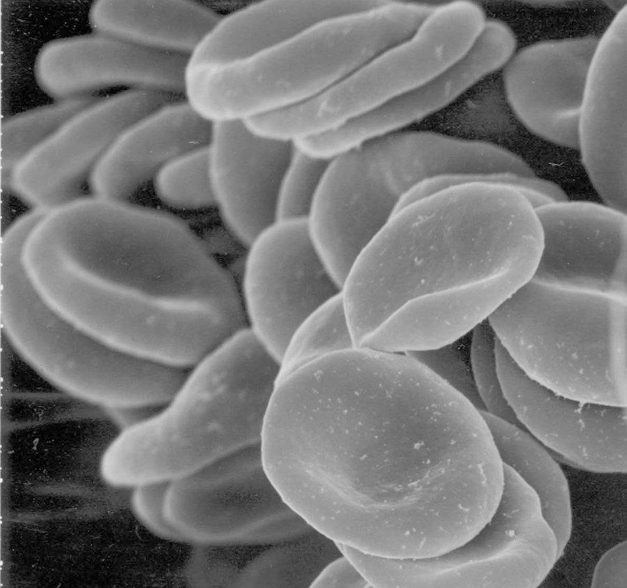
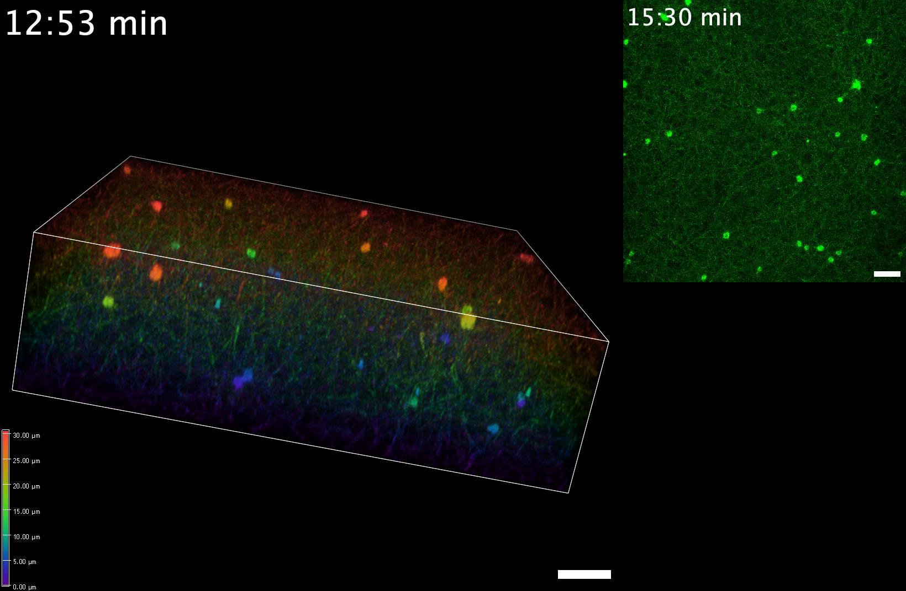
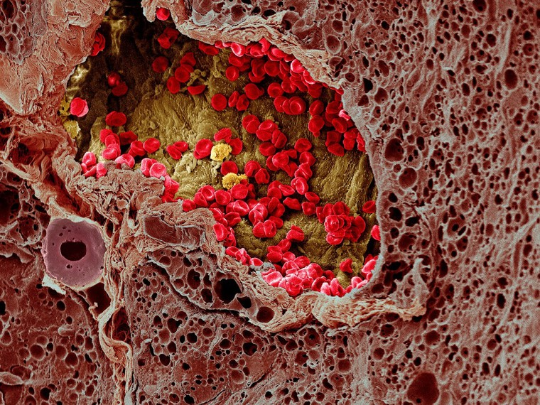

03. Blood, hemostasis and anticoagulation
A small vessel is cut. Blood must keep flowing through the rest of the circulation while a local barrier stops the leak. The repair must recruit cells and generate a strong protein network, yet avoid filling the intact vessel with that same material. Later the temporary barrier must be remodeled and removed. Meanwhile, replacing lost red cells requires a slower production response. This chapter follows that single injury across three distinct tasks: transporting oxygen, sealing a breach, and controlling where a clot grows and disappears.
Source spine: official L7, Blood, L8, Hemostasis, and L9, Anticoagulation and blood-related diseases, Sudip Mukherjee, IIT (BHU) Varanasi. Captions and a bounded sampled-still audit establish topic coverage; continuous audio/video review is not claimed. Original accounting examples, diagrams and presentation-clock animations are distinguished from empirical mechanisms. Scientific sources were checked on 4 November 2026.
3.1 What a tube of blood separates L7 02:05
Blood plasma is the liquid extracellular compartment in which blood cells and platelets are suspended. Water carries dissolved electrolytes, nutrients, metabolic products, signaling molecules and proteins. Albumin contributes to plasma oncotic pressure, the osmotic effect of plasma proteins across a vessel wall; immunoglobulins participate in immune recognition; fibrinogen supplies a soluble precursor for a clot's fibrin network. These functions belong to different molecules sharing a compartment. They cannot be inferred from the word “plasma” alone.
The formed elements are erythrocytes, leukocytes and platelets. Erythrocytes, or red blood cells (RBCs), carry hemoglobin. Leukocytes, or white blood cells, participate in defense and immune regulation. Platelets are small fragments derived from megakaryocytes, rather than miniature nucleated white cells. In centrifuged anticoagulated blood, packed red cells lie beneath a thin leukocyte/platelet layer, the buffy coat, and plasma. Hematocrit is the fraction of whole-blood volume occupied by red cells. Serum is the liquid obtained after clotting; clot formation changes its protein composition, so serum and plasma are not interchangeable specimens. These introductory distinctions follow OpenStax §18.1.
For the injured vessel, plasma brings clotting proteins, platelets supply a responsive cellular surface and an adhesive barrier, and red cells determine much of the oxygen-carrying capacity lost with blood. A normal platelet count cannot establish normal clotting-factor function. A large red-cell count cannot establish normal hemoglobin per cell. Separating amount, concentration and function is the first step toward understanding a blood count.
L7 08:05 Blood also transports glucose and other nutrients, redistributes heat and participates in acid–base and water balance. Glucose is a substrate for glycolysis, the metabolic pathway that breaks glucose down through a sequence of reactions. Transporting a nutrient is different from consuming it: a plasma glucose concentration is not itself an intracellular energy-production rate. Likewise, circulation redistributes heat but does not by itself specify how heat leaves the body. The transport/regulation functions summarized in OpenStax §18.1 provide context; detailed metabolism, renal regulation and temperature control belong to their later mechanisms.
3.2 Count, size and volume must agree L7 04:03
Let \(c_R\) be red-cell number per liter of whole blood, \(\bar v_R\) mean red-cell volume in liters per cell, and \(H\) hematocrit as a dimensionless fraction. In a homogeneous sample containing \(N\) cells in whole-blood volume \(V_b\), the red-cell volume is \(N\bar v_R\). Therefore
\[ H=\frac{N\bar v_R}{V_b}=c_R\bar v_R. \tag{3.1} \]This is volume accounting, not a diagnostic law. It assumes that the reported count and mean corpuscular volume (MCV) describe the same sample and that their definitions are consistent. With \(r\) the numerical count in millions/µL and \(m\) the numerical MCV in femtoliters (fL), \(1\ \mathrm{fL}=10^{-15}\ \mathrm{L}\) and \(1\ \mathrm{L}=10^6\ \mathrm{\mu L}\). Hence \(c_R=r\times10^{12}\ \mathrm{L^{-1}}\), and
\[ H=10^{-3}rm,\qquad H_{\%}=0.1rm. \tag{3.2} \]For an explicitly synthetic sample, \(r=5.0\) and \(m=90\) give \(H=0.450\), or 45.0%. This provides a direct unit check. Copying the source slide's \(2.5\times10^9/\mathrm{L}\) while using 90 fL would instead yield \(H=0.000225\), or 0.0225%. The count is on the wrong scale for an ordinary adult example. The NHLBI CBC table reports adult example counts in millions/µL, with reference intervals depending on context. Its intervals are examples from that source, not universal personal targets.
A second synthetic sample with \(r=4.0\) and \(m=75\) has \(H=0.300\). Count fell by 20%, cell size by 16.7%, and their product by 33.3%. A hematocrit change therefore need not be caused by count alone. Conversely, losing well-mixed whole blood initially removes cells and plasma together: their ratio can remain unchanged even though total circulating red-cell number falls. Subsequent fluid redistribution changes the concentration. A concentration measured at one instant is not a complete measure of blood loss.
The complete blood count (CBC) measures several quantities, including hemoglobin concentration, cell counts and red-cell indices. Hemoglobin concentration is mass of hemoglobin per whole-blood volume; hematocrit is red-cell volume per whole-blood volume. Their units and meanings differ. The NHLBI source also defines MCV as average cell size. For our injured-vessel case, accounting tells us what must be measured; it does not identify a mechanism from one number.
The prepared human RBCs in Figure 3.3A provide an independent surface-shape reference. Their uncalibrated image cannot supply the cell volume or count used in the synthetic accounting examples.
3.3 Hemoglobin binds oxygen; fetal hemoglobin changes affinity L7 06:24 L7 10:25
A mature human red cell is a flexible biconcave cell without a nucleus. Its hemoglobin contains four globin chains, each associated with an iron-containing heme group that can bind oxygen. Oxygen binding is reversible: a carrier that never released its cargo would be ineffective at supplying tissues. The main adult hemoglobin, HbA, has two alpha and two beta chains; fetal hemoglobin, HbF, has two alpha and two gamma chains. OpenStax §18.3 supplies cell/Hb context; the chain distinction is also described in NCBI's fetal-Hb overview, available here as an indexed excerpt.
Oxygen affinity describes binding tendency under specified conditions, rather than the amount of hemoglobin present. HbF generally has higher oxygen affinity than HbA in the relevant red-cell environment. One contributor is its weaker response to 2,3-bisphosphoglycerate (2,3-BPG), a red-cell metabolite that lowers HbA's oxygen affinity. An original whole-blood study by Orzalesi and Hay (1971) found a smaller BPG effect on fetal than adult hemoglobin; only its abstract was accessed here. We do not import its numerical ratio as a universal physiological constant.
This affinity difference helps oxygen transfer across the placenta, where maternal and fetal circulations exchange across a barrier; it does not require their blood to mix. It also does not imply unlimited oxygen delivery: partial-pressure gradients, hemoglobin amount, blood flow and tissue unloading matter. After birth, the relative production of globin chains changes and the HbF fraction declines progressively. Replacing every HbF molecule instantaneously at birth would confuse a developmental production transition with a switch on existing cells. No developmental rate or dissociation curve is calibrated in this chapter's animation.
3.4 Replace a population through production, not cell division in blood L7 12:13 L7 14:08
Erythropoiesis is production of red cells through precursor maturation in bone marrow. Erythropoietin (EPO) is a circulating hormone produced chiefly by the kidneys that stimulates this production. Reduced renal tissue oxygen availability can increase EPO signaling; production and maturation then increase the circulating red-cell population, improving oxygen transport and reducing the original stimulus. The sensor concerns tissue oxygen supply relative to use, rather than a literal counter of cells passing the kidney. NIDDK's kidney-disease anemia explanation confirms the kidney→EPO→marrow relationship and explains how kidney damage can impair it.
The response requires a functioning marrow and the materials for cell production, including iron and appropriate vitamins. A signal cannot substitute for missing substrate or healthy precursor cells. Red cells are eventually cleared, with recoverable iron recycled and heme breakdown contributing to bilirubin formation. A commonly used approximate lifespan for normal human red cells is 120 days; it summarizes a population, not a timer that every cell obeys. OpenStax's erythrocyte lifecycle discussion supplies this approximation.
Let \(N_R(t)\) be total circulating red-cell number at time \(t\) in days, \(P(t)\) production entering circulation in cells/day, \(D(t)\) removal in cells/day, and \(L(t)\) external cell loss in cells/day. A population balance is
\[ \frac{dN_R}{dt}=P(t)-D(t)-L(t). \tag{3.3} \]At a stationary population without external loss, mean production equals mean removal. If mean residence time is \(T_R\), then \(N_R=P T_R\): each day's entering cohort contributes its surviving members to the population, and integrating survival over age gives its mean lifetime. This relation requires stationary throughput; it does not assume exponentially distributed lifetimes. In a synthetic 5.0 L circulation with \(c_R=5.0\times10^{12}/\mathrm{L}\), \(N_R=2.5\times10^{13}\) cells. Using \(T_R=120\) days gives \(P=2.08333\times10^{11}\) cells/day, or approximately \(2.41127\times10^6\) cells/s. The large throughput follows from population size divided by residence time.
After the cut, loss enters through \(L\), while EPO can later change \(P\). The balance alone does not predict the delay, maximal response or feedback stability. Replacing \(D\) by \(N_R/120\) would introduce an additional age-independent removal assumption, which is not justified by quoting a mean lifespan. The animation in Figure 3.1 therefore shows causal phases on an arbitrary presentation clock, not an invented differential-equation fit.
Static and print alternative: reduced tissue oxygen→renal EPO signal→marrow precursor maturation→more circulating red cells→improved transport, with negative feedback toward the renal stimulus. At injury, exposed matrix→platelet capture/activation→aggregation plus cell-surface coagulation→crosslinked fibrin reinforcement→platelet contraction and repair→regulated fibrin cleavage. These events overlap in vivo; separated visual phases explain dependencies without measuring their duration.
3.5 One marrow, several cell functions L7 16:20 L7 18:03 L7 20:02
Hematopoiesis is blood-cell formation from blood-forming stem and progenitor cells. A conventional teaching tree separates myeloid and lymphoid developmental routes. Myeloid routes include erythrocytes, megakaryocytes/platelets, granulocytes and monocytes; lymphoid routes include B cells, T cells and natural killer cells. This is an organizational map, not proof that every human stem cell follows one irreversible binary decision. EPO favors erythroid production; thrombopoietin supports megakaryocyte/platelet production; colony-stimulating factors and interleukins regulate other populations. These are signals acting on responsive precursors, not building material transformed directly into cells. OpenStax §18.2 provides the conventional hierarchy.
Among leukocytes, neutrophils are prominent phagocytic responders to infection; eosinophils participate in parasite-associated and allergic responses; basophils release mediators involved in inflammatory/allergic signaling. These three are called granulocytes because of their conspicuous granules in conventional stains. Monocytes can enter tissues and contribute to macrophage populations. B cells can produce antibody-secreting descendants; T cells have helper, regulatory or cytotoxic roles; natural killer cells provide cytotoxic functions within innate immunity. A stained appearance is useful nomenclature, but it does not by itself establish which response is active in a patient. OpenStax §18.4 supplies these introductory roles.
A megakaryocyte releases many platelets into circulation. Platelets lack a nucleus but contain receptors, granules, a cytoskeleton and signaling machinery. Their ability to change shape, secrete mediators and exert force explains why a platelet plug is an active response. In our case, impaired marrow output can reduce more than one lineage; isolated EPO signaling cannot repair every production defect.
3.6 An intact endothelial surface restrains clotting L8 00:43 L8 02:28
Hemostasis is the coordinated response that limits blood loss after vessel injury. The endothelium is the cell layer lining the vessel lumen, the blood-facing space. It separates circulating blood from underlying matrix and helps maintain an antithrombotic environment. Endothelial nitric oxide and prostacyclin restrain platelet activation; endothelial-associated anticoagulant systems restrain coagulation. A local injury changes what blood contacts and which signals dominate. This is a change in compartmental access and surface chemistry, not a command that every platelet everywhere should aggregate. Physiological Haemostasis describes these surface-dependent roles; access in this authoring pass was limited to indexed sections.
Immediately after a breach, local vascular constriction can reduce blood loss, while platelets and coagulation proteins respond to the exposed site. Primary hemostasis names the platelet plug response; secondary hemostasis names fibrin generation through coagulation. The names separate mechanisms, not completely separate time windows. Thrombin generated by coagulation also activates platelets, and activated platelet surfaces support coagulation reactions. Calling the process a five-step sequence is useful for exposition only if this overlap is retained.
3.7 Adhesion, activation and aggregation are different operations L8 07:02 L8 09:33
Adhesion attaches a platelet to the injured vessel-wall region. Exposed subendothelial collagen binds von Willebrand factor (VWF), a multimeric adhesive protein. Platelet glycoprotein Ib within the GPIb–IX–V receptor complex binds VWF, providing an especially important capture mechanism under high shear. Collagen receptors, including GPVI and integrin α2β1, participate in activation and stable attachment. Reactome's human platelet-adhesion pathway distinguishes these interactions. VWF is not merely an attractant secreted after injury; it is present in plasma and stored or associated with relevant cells and matrix.
Activation changes a platelet's state: signaling promotes shape change, granule release and changes in receptor function. ADP, adenosine diphosphate, released from platelet granules and the lipid mediator thromboxane A₂ help recruit and activate additional platelets. Thrombin is another potent activating signal. Aggregation joins platelets to one another. Activated integrin αIIbβ3, also called GPIIb/IIIa, binds bridging ligands such as fibrinogen. A bridge between two platelets is conceptually different from a platelet tethered to collagen through VWF. Reactome's aggregation pathway emphasizes formation of interplatelet bonds.
The categories interact rather than assigning each receptor one exclusive lifetime job. For example, a human-blood flow-chamber experiment (1988), accessed at abstract level, used antibodies against VWF domains to show that both GPIb and GPIIb/IIIa interactions contributed to adhesion on collagen under its experimental shear conditions. Thus the capture/bridge picture is a useful minimal mechanism, while an experiment can reveal overlapping contributions. Figure 3.1 preserves the main distinctions without claiming receptor exclusivity or counting real molecules.
3.8 Cell surfaces organize an amplifying enzyme network L8 13:02 L8 17:31 L8 18:13
Coagulation generates fibrin through interacting reactions involving inactive precursors, enzymes and cofactors. Roman numerals label many factors; an appended “a” means activated. Factor II is prothrombin; IIa is thrombin. A cofactor helps assemble or accelerate an enzyme reaction but need not itself be a protease, an enzyme that cleaves protein. In particular, Va and VIIIa are cofactors. Treating every numbered factor as an equivalent enzyme obscures the mechanism.
Tissue factor (TF) is a membrane-associated protein exposed to blood in relevant injury contexts. Its complex with VIIa activates X and IX, initiating thrombin generation on appropriate surfaces. Activated platelets expose procoagulant phospholipids, including phosphatidylserine, which help assemble factor complexes in the presence of calcium. On these surfaces, IXa with cofactor VIIIa activates X; Xa with cofactor Va converts prothrombin to thrombin. These complexes are often called intrinsic tenase and prothrombinase, respectively. The key step is colocalizing enzyme, cofactor and substrate, rather than letting a list of soluble factors collide without spatial organization. Reactome initiation and amplification/propagation organize this human pathway.
Thrombin cleaves soluble fibrinogen to fibrin units, which assemble into a network. Thrombin also promotes activation of factor XIII; XIIIa crosslinks fibrin, reinforcing the network chemically. It feeds back into platelet activation and upstream coagulation-factor activation. The same process therefore contains initiation, amplification and stabilization. A local platelet aggregate can be present while inadequate fibrin generation leaves the barrier unstable. Reactome fibrin formation supplies the fibrin reaction sequence. The animation's fibrin lines represent the existence and location of reinforcement; they are not measured fiber lengths or a constitutive mechanics model.
Biconcave profiles in several orientations

Reading key: compare depressed central regions, thicker rims and oblique discs. The source identifies these as human erythrocytes. This supports qualitative biconcave shape; it does not calibrate diameter, cell volume or the MCV used in the accounting model.
The critical-point-dried SEM preparation uses shadowing/plating and metal-shadow contrast. Grey levels are electron-image contrast, not living blood color. Exact fixation/coating chemistry, donor health and physical calibration are unreported. Bilayer structure, hemoglobin molecules, oxygenation and live deformability are not resolved.
Tina Carvalho / Cell Image Library, CIL:221, Homo sapiens, erythrocyte · Public domain, as stated by the owning dataset. Complete 899 × 843 original TIFF decoded to lossless PNG with identical grayscale pixels; no cropping, resampling or contrast changes. Source-limited print width 110 mm provides approximately 208 ppi.
Open native RBC image · Source gallery with Native/Fit enlargement
Observed fibrin mesh and node redistribution

Signal key: Alexa 488-labelled fibrin(ogen). Left: depth-colored rendering of observed confocal stacks, with a 0–30 µm depth legend. Right: green maximum-intensity projection. Color does not identify cell type. Original 10 µm bars are retained. Bright nodes are not independently membrane-labelled platelets in this movie.
- The early field contains a fine fibrin mesh.
- Intermediate and later views show redistribution and accumulation into bright fibrin nodes during retraction.
- This observation does not establish cytoskeletal winding as the cause, normal clotting time, or injured-vessel adhesion under flow.
Separate assay without imposed flow: citrated human blood-bank PRP, 50% plasma/50% PBS, 1 × 108 platelets/ml; Alexa 488-fibrinogen 12.5 µg/ml; thrombin 2.5 U/ml; erythrocytes added for color contrast. The well was Pluronic-coated to prevent wall attachment. Acquisition used 61 z-planes at 0.5 µm steps, beginning 100 µm above the bottom. The caption reports 100 timepoints at 12.5 s intervals over 20:27 min, whereas the delivered assembly has 120 frames and divergent panel clocks. Video-specific temperature is unverified.
Grichine et al., Winding-Up of Fibrin Fibers as a Novel Mechanism of Platelet-Mediated Fiber Compaction, eLife reviewed preprint v2, 18 September 2026, Video 1 · CC BY 4.0. The owning assessment finds the causal winding/swirl mechanism incompletely demonstrated; this figure teaches observed redistribution only. The lossless browser derivative preserves all source-frame RGB pixels, frame order and publication cadence. The poster is an unchanged decoded source frame.
Play the observed assay with paused-start source controls · Open lossless WebM (116.4 MB) · Native source still · All-frame RGB and timestamp proof
Observed RBC and fibrin-retraction gallery — enlargement and movie controls
Open the full gallery in a browser tab. Native/Fit imagery, paused-start playback, seek/step and focusable native-pixel panning are supplied there; playback uses publication-file seconds.
Source rights, preparation, transformations and exact hashes · Immutable source records. Neither source supplies a complete normal-human differential, developmental lineage, calibrated RBC dimensions or an injury-to-thrombosis sequence.
3.9 Assay branches are experimental constructions L8 22:30
The classical cascade partitions “extrinsic” TF–VII-related reactions, “intrinsic” contact/factor reactions and a common X→II→fibrin segment. It remains useful for understanding clotting assays. Prothrombin time (PT) measures a fibrin endpoint after tissue-factor-containing reagent and calcium are added to a suitable plasma specimen. Activated partial thromboplastin time (aPTT) uses contact activation, phospholipid and calcium to interrogate another set of reactions. The test tube deliberately changes initiating conditions. A glass/contact-initiated plasma assay is not evidence that exposed glass is the normal initiating surface at a cut.
| Question | PT | aPTT | Platelet function |
|---|---|---|---|
| Main construction | TF-initiated plasma clot endpoint | Contact-activated plasma clot endpoint | Adhesion/activation/aggregation under test-specific conditions |
| Typical pathway organization | VII and common-pathway reactions | XII, XI, IX, VIII and common-pathway reactions | Platelet number and receptor/signaling behavior require distinct measurements |
| Boundary | A reagent-dependent plasma time does not reconstruct an intact vessel, flow, endothelium or the entire platelet response. | Normal plasma clot times cannot establish normal platelet function. | |
The NHLBI VWD report separates a CBC and platelet count, PT, aPTT, and specific VWF and factor VIII measurements. These tests interrogate different specimen properties; a plasma clotting time cannot by itself measure platelet adhesion under flow. Tillman et al. (2018) discuss why contact-factor behavior in an assay must not be read as an equivalent normal injury-initiating route.
The source's fixed “30 s” versus “4–6 min” branch timings are not used as calibrated in-vivo times. Nor are the branches independent responses: TF-dependent initiation and platelet-supported amplification interact. Conversely, contact activation's limited role in ordinary injury initiation does not make VIII/IX amplification dispensable. The existence of hemophilia A/B is one reason to preserve that distinction. Numerical clot-time patterns in a teaching exercise below are synthetic and insufficient for diagnosis.
3.10 Limit, contract, repair and remove L8 25:00 L8 27:23
Growth must remain local. Antithrombin is a plasma serpin, a serine-protease inhibitor, that inhibits thrombin and several activated factors including Xa. Endothelial glycosaminoglycans and pharmacological heparin can enhance its inhibitory action. Heparan sulfate at a cell surface and a heparin drug preparation should not be collapsed into one label. UniProt's reviewed human antithrombin record P01008 establishes the protein's inhibitor classification. Some heparin labels use misleading “protease activity” wording for antithrombin; the target enzymes are proteases, whereas antithrombin inhibits them.
A second restraint uses thrombin bound to endothelial thrombomodulin to activate protein C. Activated protein C (APC), aided by protein S, inactivates Va and VIIIa, reducing the activity of the prothrombinase and tenase complexes. This changes thrombin's functional context: the same enzyme participates in a clot-promoting network and, when appropriately bound, an anticoagulant pathway. The CEPROTIN label §12.1 supports this direction and these targets. The source slide's reversed protein-C activation and V/VII prose are corrected to protein C→APC and Va/VIIIa inactivation. Tissue factor pathway inhibitor adds restraint on TF-associated initiation; Reactome regulation places these controls within the network.
Clot contraction, often called retraction, occurs when platelet contractile machinery transmits force through platelet–fibrin connections, compacting the clot and bringing wound edges closer. Repair includes coordinated cell migration and tissue restoration; it is not merely fibrin becoming permanent vessel wall. The introductory account in OpenStax §18.5 distinguishes contraction, repair and fibrinolysis.
Fibrinolysis cleaves fibrin. Tissue plasminogen activator (tPA) promotes conversion of plasminogen to plasmin in the fibrin-associated system; plasmin is the protease that cuts the fibrin network into soluble products. Inhibitors restrain both plasminogen activators and plasmin. Surface localization and inhibition help prevent indiscriminate protein digestion in circulating blood. Reactome dissolution of fibrin clot describes these mechanisms. Decreasing new fibrin generation and cutting existing fibrin are therefore different interventions. Figure 3.1 draws contraction as geometric compaction and fibrinolysis as disappearance of severed fibers; neither visual is an experimentally fitted mechanical or enzyme-kinetic simulation.
3.11 Anticoagulants alter different parts of the mechanism L9 01:35 L9 05:35
An anticoagulant reduces coagulation; an antiplatelet intervention reduces platelet activation or aggregation; a fibrinolytic intervention promotes fibrin breakdown. Interactions between these systems do not make the categories synonymous. The purpose of the target sequence is to locate a mechanism, not select a drug for a person.
Heparin's major anticoagulant action is mediated through antithrombin, enhancing inhibition of activated coagulation enzymes including Xa and thrombin. It is not classified here as a direct thrombin inhibitor and has no intrinsic fibrinolytic activity. The heparin sodium label §12.1 explicitly distinguishes preventing clot formation from lysing an existing clot. Formulations and molecular-chain properties affect relative targets; this chapter does not treat all heparins as quantitatively identical. Bleeding and heparin-induced thrombocytopenia are material risks, not proof that an observed platelet fall is due to heparin. The lecture's broad stroke-use suggestion is not adopted as a treatment rule.
The FDA heparin label's adverse-reaction section also records hypersensitivity and osteoporosis with long-term administration. These are different adverse mechanisms, not one generic impurity reaction. L9 30:52 For the lecture's reversal question, protamine sulfate's label identifies heparin-overdosage treatment and formation of an inactive heparin–protamine complex. Protamine can itself cause severe reactions, and reversal depends on formulation and clinical context; a named antagonist is not a general instruction for treating bleeding.
L9 12:06 Warfarin affects the vitamin K cycle, including VKORC1, vitamin K epoxide reductase complex subunit 1. Reduced vitamin K is required for post-translational gamma-carboxylation of proteins needed for normal activity of factors II, VII, IX and X and proteins C and S. Blocking recycling reduces production of functionally active proteins; it does not instantly inhibit every already circulating factor molecule. Factor VIII is not part of that vitamin-K-dependent list. The warfarin label §12.1 supplies the mechanism. Its inclusion of C/S explains why “reduces every procoagulant while leaving every anticoagulant intact” is false. Bleeding, tissue necrosis and pregnancy-related risks belong to the drug's clinical context; mechanism alone does not determine an individual's suitability.
3.12 A collection-tube anticoagulant is part of the experiment L9 09:28 L9 15:10
Calcium participates in assembly of several coagulation complexes. Chelating available calcium can therefore prevent clotting in a specimen. EDTA, ethylenediaminetetraacetate, is a multidentate ligand: several donor atoms coordinate a metal ion. Four carboxyl groups do not imply binding four calcium ions per EDTA molecule. The ordinary calcium–EDTA chelate is treated as 1:1; one molecule wraps multiple coordinating groups around one ion. PubChem's EDTA record provides chemical context. Actual speciation depends on protonation, competing metals and solution conditions; no binding constant is invented here.
Collection tubes can contain potassium EDTA for hematology or buffered sodium citrate for coagulation studies. A BD manufacturer specification identifies these distinct product uses. Citrated plasma can be recalcified under controlled assay conditions. Anticoagulant amount relative to specimen volume is thus part of the measurement definition, not an irrelevant packaging detail. Oxalate can remove available calcium through calcium oxalate formation; manufacturer Greiner's collection-tube catalogue identifies potassium oxalate-containing products. The source's suggestion of arbitrary iron/zinc/calcium oxalates as interchangeable tube additives is not adopted.
The statement “EDTA can never have an internal medical use” is also too broad. Edetate calcium disodium injection's owning label describes lead-chelation indications. This calcium-containing pharmaceutical formulation differs from potassium-EDTA collection additives and from edetate disodium. The WHO lead-exposure guideline explicitly warns against confusing calcium disodium edetate with disodium edetate, which can cause fatal hypocalcemia. This distinction corrects a chemical-category error; it supplies no preparation or administration instructions.
3.13 Similar bleeding signs can arise from different defects L9 16:31 L9 19:15
Hemophilia A involves deficient factor VIII activity; hemophilia B deficient factor IX activity. These defects weaken the platelet-surface amplification system. Inherited A/B commonly follows X-linked transmission, but “only males are affected” is wrong: females can have symptomatic, sometimes severe, hemophilia. CDC's women-and-hemophilia account makes that distinction explicit. A person carrying a variant is not guaranteed a symptom-free phenotype. Acquired inhibitors are a different cause of factor dysfunction and should not be fitted into a simple inherited pedigree.
Factor XI deficiency is another bleeding disorder, with an autosomal inheritance framework rather than the universal X-linked rule for A/B. MedlinePlus Genetics describes its inheritance and variable bleeding. “Failure of prothrombin activator” is therefore an inadequate disease definition: several distinct defects can eventually reduce thrombin generation. A diagnostic explanation must identify which part of the system has failed.
Von Willebrand disease (VWD) involves insufficient or dysfunctional VWF, impairing platelet adhesion and potentially reducing factor VIII availability because VWF also stabilizes circulating VIII. It is not confined to failure of VWF secretion from a freshly damaged cell. CDC's VWD overview distinguishes quantitative and functional forms. A normal platelet count does not exclude this adhesive-protein defect, and plasma screening times alone do not establish its absence.
Purpura denotes bleeding into skin or mucosal tissue producing discolored lesions; it is a sign, not one universally inherited disease. In immune thrombocytopenia (ITP), immune-mediated platelet destruction and impaired production can reduce platelet count, as described by NHLBI. In thrombotic thrombocytopenic purpura (TTP), activity of ADAMTS13 is severely reduced. ADAMTS13 is a protease that cleaves VWF multimers, limiting unusually large, strongly platelet-adhesive forms. Failure of this restraint permits VWF-associated platelet microthrombi, consuming circulating platelets and damaging red cells in small vessels. NHLBI's TTP account separates inherited ADAMTS13 defects from acquired immune attack. Low circulating platelets and excessive local clotting can therefore coexist; they are not logical opposites.
IgA vasculitis, formerly Henoch–Schönlein purpura, instead involves IgA-associated inflammation of small vessels. The NIDDK account explains vessel inflammation and leakage. Describing ITP, TTP and IgA vasculitis as the same T-cell attack on platelets would erase their central distinctions. A useful classification asks whether the primary defect concerns platelet quantity/function, factor activity, adhesive proteins, microvascular thrombosis or the vessel wall.
Verified extension, regulatory snapshot 4 November 2026: the lecture discusses gene transfer, CRISPR-based editing and implanted engineered cells, noting that some approaches remain investigational. Their regulatory status must be checked separately. The FDA HEMGENIX page lists a gene therapy for selected adults with hemophilia B. Its package insert identifies an adeno-associated viral vector approach. Delivering a gene by a viral vector, editing an endogenous DNA sequence with CRISPR, and implanting engineered encapsulated cells are different technologies. Approval of one does not establish approval, efficacy or suitability of the others; no general cure or availability claim follows.
3.14 Obstructed flow, reduced carrying capacity and abnormal production L9 26:19 L9 26:50
Thrombosis is pathological clot formation within a vessel. A thrombus can restrict flow locally; an embolus is material traveling in blood that can lodge elsewhere. Local hemostasis and thrombosis share platelet/coagulation machinery but differ in context and consequence. The clot that seals our vessel becomes dangerous if its growth obstructs the lumen. Anticoagulant mechanisms restrain propagation; they do not make all clot formation undesirable. Loss of protein-C restraint can favor thrombosis even though protein C itself is not a clot-forming factor.
Anemia concerns insufficient hemoglobin/red-cell oxygen-carrying capacity in context. Its causes include reduced production, blood loss and accelerated red-cell destruction, called hemolysis. Low iron, vitamin B12 or folate can impair production, but supplementation is not a universal remedy for every mechanism. Kidney disease can reduce EPO; marrow disease can impair response; ongoing bleeding increases loss. NHLBI's anemia overview and NIDDK's multifactorial CKD account support this separation. The population balance (3.3) places each cause in a different term. It does not prescribe how to correct it.
L9 28:11 In sickle-cell disease, abnormal hemoglobin including HbS can polymerize when deoxygenated, changing red-cell mechanics and promoting hemolysis and vaso-occlusion, obstruction of small-vessel flow. The NHLBI causes account links inherited hemoglobin changes to abnormal cells and obstruction. A sickle outline is a visible consequence, not the whole causal explanation. Both shortened cell survival and impaired flow can reduce tissue oxygen delivery; merely counting geometrical “clogs” would miss inflammation, adhesion and vascular interactions. Our normal-lifespan turnover example is not a sickle-cell kinetic model.
L9 29:28 Leukemia denotes cancers of blood-forming tissues with abnormal blood-cell production. In acute myeloid leukemia, abnormal myeloid precursors interfere with normal blood formation, potentially producing anemia, thrombocytopenia and impaired infection defense. More abnormal white cells does not mean more effective immunity. NCI's AML PDQ patient account supplies the lineage and marrow mechanism. Acute/chronic and myeloid/lymphoid categories are distinct; prognosis and treatment depend on subtype and molecular context. The lecture's generic early-detection cure assertion is not retained as a guarantee, and a red-cell transfusion does not itself eradicate a malignant clone.
3.15 Reproduce the accounting and interrogate an assay pattern
The standard-library program ch03_blood_accounting.py computes hematocrit from count and mean volume, population turnover from blood volume/count/residence time, and a synthetic specimen-dilution comparison. Inputs must be finite and positive, and physically impossible hematocrit above one is rejected. It performs no network access and writes no patient record. Run python -X utf8 code/ch03_blood_accounting.py; the included checks test unit conversion, product scaling, impossible inputs and the distinction between whole-blood loss and cell-free dilution.
For a synthetic assay comparison, specimen A has PT 12 s against a stated local interval 10–14 s and aPTT 60 s against 25–35 s, with platelet count 250×10⁹/L. Specimen B has PT 12 s, aPTT 30 s and platelet count 40×10⁹/L. A suggests investigating reactions interrogated by aPTT, including factor deficiencies, inhibitors, anticoagulant effects and specimen issues. B instead demonstrates a platelet-count abnormality despite these plasma times falling within the supplied intervals. Neither identifies a unique disease. These values and intervals are invented for reasoning, not measured patient data or universal laboratory standards.
The key experimental-design question is whether the measurement contains the mechanism under investigation. A plasma clot endpoint cannot directly measure how platelets attach under arterial shear. A platelet count cannot measure factor VIII activity. Changing the specimen or reagent changes the question answered. That principle is more useful than memorizing a unique disease label for each pair of times.
3.16 What the explanations establish
The equations establish unit-consistent volume accounting and stationary population throughput under explicit assumptions. They do not predict EPO response dynamics, blood viscosity, oxygen delivery or bleeding severity. The molecular explanations identify causal roles and their contexts; they do not supply measured concentrations or reaction-rate constants. Presentation phases make order visible without asserting that one pathway finishes before another starts.
Figures 3.1 and 3.2 are original schematics with artificial colors and exaggerated dimensions. Figure 3.2 is a developmental classification, not a cell-tracking experiment. Figure 3.1 omits three-dimensional vessel mechanics, flow-dependent transport, detailed receptor kinetics, fibrin micromechanics and wound-remodeling cells. Figure 3.3 supplies prepared human RBC surface morphology and a separate observed PRP fibrin-retraction assay with divergent panel clocks. Figure 3.4 supplies a prepared animal-specimen view of lumen, boundary and surrounding tissue. These observations do not establish a complete blood-cell differential or developmental lineage, normal human wall layers, living-tissue color, or the full injury–adhesion–activation sequence and its physiological timing.


3.17 Six worked problems
Problem 1. Detect a unit error through volume accounting
A synthetic report lists \(4.8\times10^6\) red cells/µL and MCV 85 fL. Derive its implied hematocrit. A transcription replaces “per µL” by “per L” while keeping the count unchanged. Quantify the resulting error.
Worked solution
The original count is \(4.8\times10^{12}/\mathrm{L}\). Multiplying by \(85\times10^{-15}\ \mathrm{L/cell}\) gives \(H=0.408\), or 40.8%. Cells and liters cancel as required. With the erroneous count \(4.8\times10^6/\mathrm{L}\), the implied fraction is \(4.08\times10^{-7}\), or 0.0000408%. It is smaller by \(10^6\). MCV has not changed; the mistake concerns concentration units. The calculation detects inconsistency but does not establish whether the original specimen is clinically normal.
Problem 2. Separate population loss from concentration change
Start with the synthetic 5 L, 45% hematocrit circulation. Remove 1 L of perfectly mixed whole blood. Calculate remaining red-cell volume and hematocrit immediately. Then add 1 L of cell-free fluid without further exchange or loss and recalculate. State the assumptions that fail in a real bleeding episode.
Worked solution
Initial red-cell volume is \(5\times0.45=2.25\) L. Whole-blood removal takes \(1\times0.45=0.45\) L of red cells and 0.55 L of non-red-cell volume. Remaining blood is 4 L with 1.80 L red cells, so hematocrit remains \(1.80/4=0.45\). Red-cell amount fell even though the concentration ratio did not. Adding 1 L cell-free fluid makes total volume 5 L without changing red-cell volume, giving \(H=1.80/5=0.36\), or 36%. This is dilution. Real episodes involve changing vascular volumes, interstitial exchange, ongoing loss and physiological responses; instant perfect mixing is a teaching assumption.
Problem 3. A mean lifetime is not a removal law
A stationary synthetic population contains \(2.5\times10^{13}\) cells. Compare required production for mean residence times 120 and 60 days. Does knowing either mean determine how rapidly the population falls after production abruptly stops?
Worked solution
Stationarity gives \(P=N_R/T_R\). At 120 days, \(P=2.08333\times10^{11}\) cells/day; at 60 days, \(P=4.16667\times10^{11}\) cells/day. Halving mean survival doubles required replacement at fixed population. This is an accounting consequence, not a disease-specific prediction.
The mean alone cannot determine the subsequent fall. With memoryless exponential removal, stopping production yields an exponential decline. With identical deterministic lifetimes and a stationary uniform age distribution before stopping, the remaining population instead declines linearly to zero over one lifetime. Both constructions can share the same mean lifetime and initial population while producing different trajectories. We therefore need the survival/age distribution to predict the transient.
Problem 4. Locate the intervention before predicting the effect
A diagram shows heparin cutting fibrin, protein C becoming inactive when thrombin binds thrombomodulin, and GPIb joining adjacent platelets through fibrinogen. Repair each main arrow. Explain why anticoagulation can limit growth without directly dissolving a clot.
Worked solution
Heparin enhances antithrombin-mediated inhibition of coagulation enzymes; plasmin cleaves fibrin. Thrombin–thrombomodulin promotes protein C activation; APC with protein S inactivates Va/VIIIa. For the simplified platelet mechanism, GPIb–IX–V participates in VWF-mediated wall capture, while activated αIIbβ3 binds bridging ligands such as fibrinogen during aggregation. The receptors have overlapping biology, but these main arrows locate different operations.
Reducing thrombin generation reduces the supply of newly formed fibrin. Existing crosslinked fibrin is a different substrate requiring a breakdown mechanism. Consequently, suppressing growth and promoting dissolution can coexist in a biological response without being the same action of the same molecule. No time-to-resolution follows from the corrected arrows.
Problem 5. Keep inheritance probability distinct from phenotype
Under an idealized X-linked model for a known A/B-associated variant, a mother has one variant-bearing and one unaffected X chromosome, and the father has an unaffected X and a Y. Assume independent equal segregation and equal probability of XX and XY offspring. Compute transmission categories. Explain why the grid cannot establish that every heterozygous daughter is asymptomatic. Contrast factor XI deficiency.
Worked solution
The mother transmits either X with probability 1/2; the father transmits X or Y with probability 1/2. The four combinations each have probability 1/4: XX without the variant, XX with one variant, XY without the variant and XY with the variant. Conditional on a son, variant probability is 1/2; across all offspring, the idealized variant-bearing-son category is 1/4. Conditional and unconditional probabilities must not be confused. Across repeated births probabilities do not guarantee a particular family composition.
The grid describes transmission, not measured factor activity or bleeding. Females with one variant can have symptomatic hemophilia; classification requires phenotype and appropriate testing. Acquired inhibitors and other genetic circumstances are also outside this grid. Factor XI deficiency uses an autosomal framework, so inserting it into this X-linked grid is a category error rather than a new percentage.
Problem 6. Design measurements to distinguish three failures
Three hypotheses explain impaired clot formation: reduced platelet number, dysfunctional VWF, or deficient VIII activity. Propose measurements that distinguish the mechanisms. Then explain why a low platelet count could coexist with pathological microthrombi in TTP.
Worked solution
A CBC/platelet count tests quantity; a smear adds morphology and specimen context. VWF antigen and functional measurements examine adhesive-protein amount and behavior. VIII activity assays interrogate a coagulation cofactor. PT/aPTT provide pathway-oriented screening context but cannot substitute for all three. VWF can affect VIII stability, so an abnormal VIII result need not identify an isolated inherited VIII defect. One should compare convergent measurements and assay limitations rather than assign diagnoses mechanically from a single result.
In TTP, deficient ADAMTS13 activity permits excessive VWF-associated platelet microthrombi. Platelets incorporated into those thrombi are no longer counted as freely circulating platelets, so count falls while microvascular clotting rises. This mechanism differs from immune platelet destruction in ITP and from a vessel-wall inflammatory lesion in IgA vasculitis. The reasoning locates processes; it is not a clinical decision algorithm.
3.18 Source and access record
Official lecture navigation follows the links beside headings. The chapter uses private publisher captions for L7–9 and the existing audit of eleven contact sheets with thirteen targeted frames, rather than reproducing slides. Source corrections concern RBC units, protein C direction/targets, factor identities, assay versus physiological initiation, heparin mechanism, EDTA formulation, symptomatic females and disease categories. Captions are evidence of lecture coverage, not independent evidence that each claim is correct.
On 4 November 2026, directly readable owning pages included NHLBI anemia/CBC, ITP, TTP and sickle-cell causes; NIDDK renal anemia and IgA vasculitis; CDC women/hemophilia and VWD; NCI AML PDQ; DailyMed CEPROTIN and calcium-disodium edetate; and Reactome platelet aggregation, fibrin dissolution and current coagulation pathway entries. UniProt P01008, warfarin/heparin label mechanisms, manufacturer collection-tube specifications, WHO's salt warning and MedlinePlus XI deficiency were checked through returned indexed or directly readable extracts. Claim-adjacent links identify the relevant records. OpenStax text was consulted for introductory context only; none of its figures, slide layouts or illustrations is copied.
Primary-study depth is explicitly bounded: the 1971 fetal-Hb study and 1988 human-blood flow-chamber study were read at abstract level, not as full experimental reports. The Tillman review reopen returned a browser check; only the prior documented project read supports its introduction-level use. Old Reactome common/intrinsic/extrinsic identifiers returned 404; the chapter links the current initiation/amplification/fibrin/regulation entries. No numerical model is fitted to these sources. Drug-label discussion establishes mechanism categories; it does not verify a comparative treatment strategy.
Figure 3.3 uses Tina Carvalho’s source-identified human erythrocyte SEM, CIL:221 (owning dataset: public domain) and separate Grichine et al. reviewed preprint v2, Video 1 (CC BY 4.0). The former is a prepared surface image; the latter records a static citrated PRP assay with exogenous thrombin and no imposed vessel flow. Exact source/assay records and all-frame lossless derivative/timestamp proof preserve transformations and two-clock limits. The movie is evidence of fibrin redistribution, not proof of the proposed winding mechanism or a recorded full hemostasis sequence.
Figure 3.4 separately reproduces S. Gschmeissner, K. Hodivala-Dilke and M. Stone / Wellcome Collection, Blood vessel in a skin melanoma, SEM, B0003655, under CC BY 4.0. It is a prepared, color-enhanced mouse tumor specimen, not a normal human vessel or a registered frame from the clot assay. Its owning source, unchanged image and scope are documented with Figure 3.4.